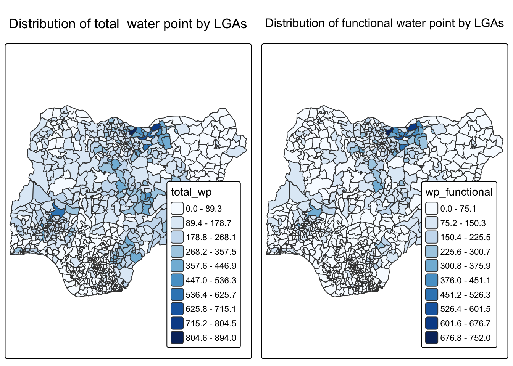

pacman::p_load(tmap, tidyverse, sf)Hands-on Exercise 9C
Analytical Mapping
In this in-class exercise, we will gain hands-on experience on using appropriate R methods to plot analytical maps.
1. Installing and loading packages
2. Importing data
For this exercise, we use a prepared dataset called NGA_wp.rds.
It is a polygon data frame that shows information about water points in Nigeria at the LGA level.
You can find the dataset in the rds subfolder of the hands-on data folder.
NGA_wp <- read_rds("data/NGA_wp.rds")3. Basic Choropleth Mapping
p1 <- tm_shape(NGA_wp) +
tm_polygons(fill = "wp_functional",
fill.scale = tm_scale_intervals(
style = "equal",
n = 10,
values = "brewer.blues"),
fill.legend = tm_legend(
position = c("right", "bottom"))) +
tm_borders(lwd = 0.1,
fill_alpha = 1) +
tm_title("Distribution of functional water point by LGAs")p2 <- tm_shape(NGA_wp) +
tm_polygons(fill = "total_wp",
fill.scale = tm_scale_intervals(
style = "equal",
n = 10,
values = "brewer.blues"),
fill.legend = tm_legend(
position = c("right", "bottom"))) +
tm_borders(lwd = 0.1,
fill_alpha = 1) +
tm_title("Distribution of total water point by LGAs")tmap_arrange(p2, p1, nrow = 1)
4. Choropleth Map for Rates
In our readings, we see that it is better to map rates instead of counts, because water points are not evenly distributed in space. If we ignore this, we only show total numbers of water points instead of the real pattern we want to study.
4.1 Deriving Proportion of Functional Water Points and Non-Functional Water Points
NGA_wp <- NGA_wp %>%
mutate(pct_functional = wp_functional/total_wp) %>%
mutate(pct_nonfunctional = wp_nonfunctional/total_wp)4.2 Plotting map of rate
tm_shape(NGA_wp) +
tm_polygons("pct_functional",
fill.scale = tm_scale_intervals(
style = "equal",
n = 10,
values = "brewer.blues"),
fill.legend = tm_legend(
position = c("right", "bottom"))) +
tm_borders(lwd = 0.1,
fill_alpha = 1) +
tm_title("Rate map of functional water point by LGAs")
5. Extreme Value Maps
Extreme value maps are a type of choropleth map that focus on very high and very low values.
They use classification to highlight outliers at both ends of the data range. The goal is to support exploratory data analysis by adding a spatial view, as suggested by Anselin (1994).
5.1 Percentile Map
Data Preparation
Step 1: Exclude records with NA by using the code chunk below.
NGA_wp <- NGA_wp %>%
drop_na()Step 2: Creating customised classification and extracting values
0% 1% 10% 50% 90% 99% 100%
0.0000000 0.0000000 0.2169811 0.4791667 0.8611111 1.0000000 1.0000000 First, we create an R function to extract a variable (such as wp_nonfunctional) from an sf data frame as a simple vector.
Arguments:
vname: the variable name (as a character string)df: the sf data frame
Return:
-
v: a vector of values (without column names)
Next, we will write a percentile mapping function by using the code chunk below.
percentmap <- function(vnam, df, legtitle=NA, mtitle="Percentile Map"){
percent <- c(0,.01,.1,.5,.9,.99,1)
var <- get.var(vnam, df)
bperc <- quantile(var, percent)
tm_shape(df) +
tm_polygons() +
tm_shape(df) +
tm_polygons(vnam,
title=legtitle,
breaks=bperc,
palette="Blues",
labels=c("< 1%", "1% - 10%", "10% - 50%", "50% - 90%", "90% - 99%", "> 99%")) +
tm_borders() +
tm_layout(main.title = mtitle,
title.position = c("right","bottom"))
}To run the function, type the code chunk as shown below.
percentmap("total_wp", NGA_wp)
5.2 Box map
A box map is basically a quartile map with two extra classes for extreme values.
It adds a lower class and an upper class to highlight outliers.
If there are lower outliers, the first break starts at the minimum value and the second break is the lower fence. If there are no lower outliers, the first break starts at the lower fence and then moves to the minimum value, since no data falls between them.
ggplot(data = NGA_wp,
aes(x = "",
y = wp_nonfunctional)) +
geom_boxplot()
The code chunk below is an R function that creating break points for a box map.
-
arguments:
v: vector with observations
mult: multiplier for IQR (default 1.5)
-
returns:
- bb: vector with 7 break points compute quartile and fences
boxbreaks <- function(v,mult=1.5) {
qv <- unname(quantile(v))
iqr <- qv[4] - qv[2]
upfence <- qv[4] + mult * iqr
lofence <- qv[2] - mult * iqr
# initialize break points vector
bb <- vector(mode="numeric",length=7)
# logic for lower and upper fences
if (lofence < qv[1]) { # no lower outliers
bb[1] <- lofence
bb[2] <- floor(qv[1])
} else {
bb[2] <- lofence
bb[1] <- qv[1]
}
if (upfence > qv[5]) { # no upper outliers
bb[7] <- upfence
bb[6] <- ceiling(qv[5])
} else {
bb[6] <- upfence
bb[7] <- qv[5]
}
bb[3:5] <- qv[2:4]
return(bb)
}The code chunk below is an R function to extract a variable as a vector out of an sf data frame.
-
arguments:
vname: variable name (as character, in quotes)
df: name of sf data frame
-
returns:
- v: vector with values (without a column name)
Let’s test the newly created function
var <- get.var("wp_nonfunctional", NGA_wp)
boxbreaks(var)[1] -56.5 0.0 14.0 34.0 61.0 131.5 278.0The code chunk defines an R function that creates a box map. It takes four inputs:
vnam: variable name (as a character string)df: an sf polygon data framelegtitle: legend titlemtitle: map titlemult: multiplier for the IQR
It returns a tmap object that displays the map.
boxmap <- function(vnam, df,
legtitle=NA,
mtitle="Box Map",
mult=1.5){
var <- get.var(vnam,df)
bb <- boxbreaks(var)
tm_shape(df) +
tm_polygons() +
tm_shape(df) +
tm_fill(vnam,title=legtitle,
breaks=bb,
palette="Blues",
labels = c("lower outlier",
"< 25%",
"25% - 50%",
"50% - 75%",
"> 75%",
"upper outlier")) +
tm_borders() +
tm_layout(main.title = mtitle,
title.position = c("left",
"top"))
}tmap_mode("plot")
boxmap("wp_nonfunctional", NGA_wp)